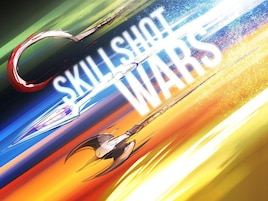

Explore more Dota 2 custom games
Dota 12v12: If you still prefer that iconic main game, but also wants to rest from it a bit, maybe you should try Dota 2 12 vs 12. Everything is the same on this mode; the gameplay, the items, the skills, the mechanics are all the same – except it is 12 players against 12 players

Dota AutoChess: Auto chess is a game that has exploded in popularity recently and has a very unique playstyle. The point of the game is to choose three champions from the rng table and combine them to make each champion stronger. It’s a lot of luck involved and fast thinking.

Skill Shot Wars: If you think both Mirana Wars and Pudge Wars are equally fun, why not have them both in a single arcade game but with bonuses, right? Bonuses because it is not just Mirana and Pudge that are being featured here, but all other heroes with skills that can’t be targeted directly towards a target. Heroes like Mirana (arrow), Pudge (hook), Invoker (sunstrike), and Clockwerk (hookshot) will be featured here.
Dota Run: Another mode which stars Mirana is the Dota Run. This time it’s not about killing or arrowing, but rather racing towards a finish line. The person who reaches the finish line first, or at least the one who went furthest will win the round. This is no ordinary race, because you can get screwed by both unique environmental obstacles or by your opponents as you race for the finish line. From evading hooks, to leaping towards a safe ground like Mario, this game will definitely make you laugh over and over again even if you are just playing alone.
Collosseum: If you prefer the more strategic method leaning towards the use of environmental hazards to your advantage, then Coloesseum might be the mode you can enjoy. This is Valve’s 2nd official arcade game being released next to Overthrow, and this mode has been played by thousands of players worldwide. The mechanics of this game is pretty simple, but it can get complicated depending on how you perform.
Overthrow 2.0: Overthrow is set to play in a map with a single throne, but with multiple teams. The aim, however, on this mode is not to break the throne but rather get as much kills as possible to reach a certain number. The first team to reach that number of kills will win the game.